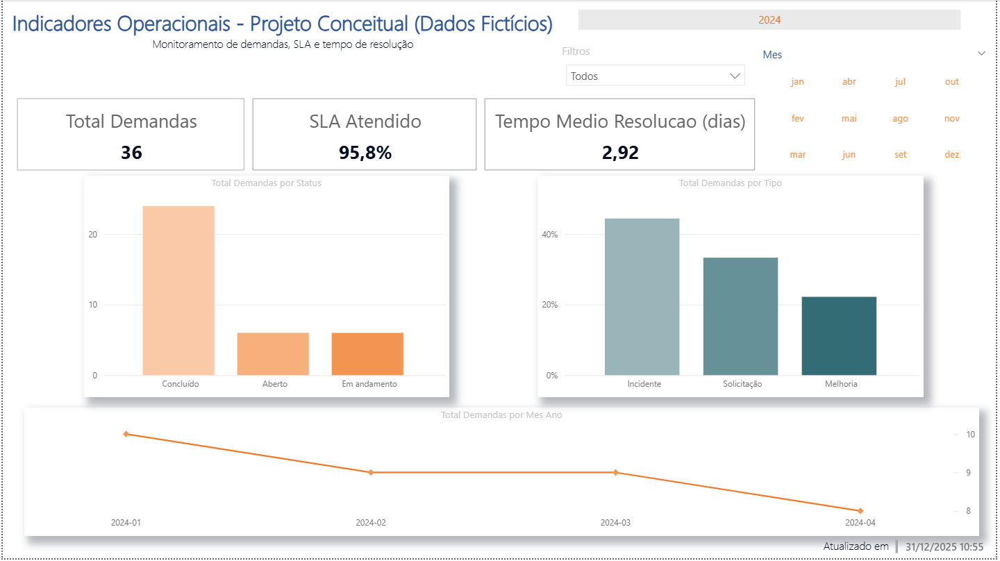

Gestão Operacional
Monitoramento de SLAs
Análise de performance e redução de backlog em tempo real, focada em indicadores de atendimento.
Ver Case Detalhado →Desenvolvo ecossistemas de dados resilientes: da extração automatizada à inteligência estratégica. Minha especialidade é garantir a integridade dos dados para que a tomada de decisão seja rápida, segura e baseada em fatos.
Minha trajetória é marcada pela habilidade de traduzir necessidades de negócio em soluções técnicas. Com domínio em SQL, Python e Power BI, foco em eliminar gargalos operacionais e garantir que os dados reflitam a realidade para uma gestão de alta performance. Atuo no desenho de processos (BPMN) e na construção de ecossistemas de dados que facilitam o dia a dia das operações corporativas. Além do mapeamento de fluxos (BPMN), projeto pipelines de dados capazes de lidar com múltiplos ambientes (Multi-tenant) e auditorias preventivas automatizadas, eliminando o erro humano em processos críticos de negócio.
Análise de performance e redução de backlog em tempo real, focada em indicadores de atendimento.
Ver Case Detalhado →
Mapeamento de jornada do paciente integrado a indicadores de faturamento e produtividade clínica.
Ver Case Detalhado →
CONNECT → SQL Server | MySQL | SQLite | PostgreSQL
↓
QUERY → SQL dinâmico validado
↓
ANALYZE → Z-Score (detecção de anomalias)
↓
EXPORT → CSV | JSON | Parquet
Ferramenta desktop em Python para extração de dados SQL, detecção de anomalias (z-score) e exportação para BI.
Ver Case Detalhado →
COLLECT → Dados | Interfaces | Logs
↓
VALIDATE → Integridade (Pandas)
↓
TEST → UI Automation (Selenium)
↓
REPORT → Evidências e alertas
Validação de integridade de dados via Pandas e testes automatizados de interface com foco em segurança.
Ver Case Detalhado →